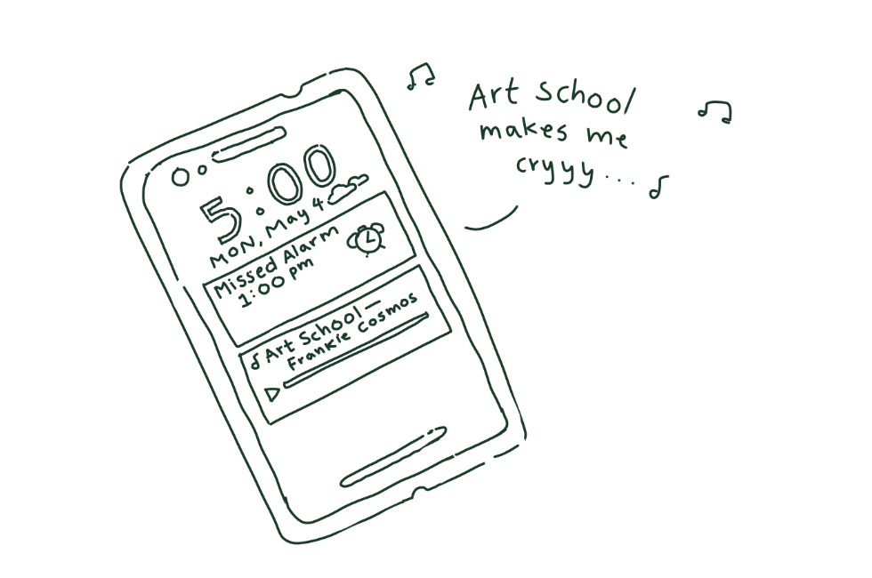

by a. phan
(cw: existential dread, anxiety, covid-19)

The other day I woke up thinking it was Thursday.
When I opened my eyes, the room was dimly lit
and my eyes felt heavy with grogginess.
My phone told me that it was actually Monday afternoon at 5 pm
and I had slept through a deadline and a Zoom meeting.
I have three other classes to worry about as well
but at this moment as I stared at the ceiling in my bed,
I felt disconnected from my own feelings.
“I may not pass my classes.”